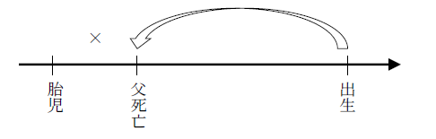
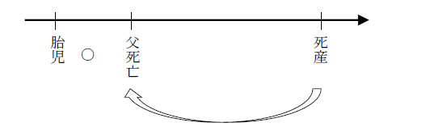
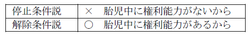
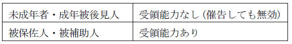
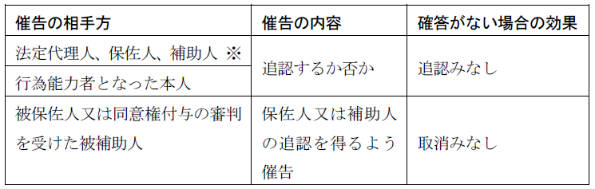

第０編 序 論↑Top
私人の日常生活（社会生活）を規律する最も基本的な法であり、主として私人の財産関係と家族関係を規律する。
1. 私法
民法は、平等な私人間の関係を規律する法である。
cf. 公法（国家統治権の発動に関する法 ex. 刑法）
2. 実体法
民法は、裁判をする際の紛争解決の基準となる法である。
cf. 手続法（裁判を進める方法や形式についての基準となる法 ex. 民事訴訟法）
3. 一般法
民法は、私法の分野における一般法であるから、人・事物・行為あるいは地域を限定せず、広く一般に適用される。
cf. 特別法（特定の人・事物・行為又は地域に限って適用される法）
この、一般法と特別法の区別は相対的なものである。例えば、商法は、民法に対しては特別法であるが、金融商品取引法などに対しては一般法である。
一般法・特別法の区別の実益は、法適用の順序に現れる。特別法は一般法に優先して適用される。
1. 権利能力平等の原則
：すべての自然人が差別されることなく、権利義務の主体になる資格（権利能力）をもつという原則（３条１項参照）
2. 所有権絶対の原則
：人は所有物に対しては完全な支配権を有し、しかも神聖不可侵であるという原則（憲法29条１項）
3. 私的自治の原則
：市民社会において人が義務を負うのは、自らの意思でそれを望んだときだけであるという原則
その内容として、契約自由の原則が挙げられる。
第１編 総則↑Top
第１章 私権についての基本原理↑Top
私権の行使については、社会的共同生活の利益に反してはならない（憲法29条２項参照）。
1. 意義
：人は、具体的事情の下において相手方から一般に期待される信頼を裏切ることのないように、誠意をもって行動すべきであるとする原則
はじめは債権法を支配する原理であったが、やがて、物権法の領域でも妥当するとされ、さらには社会的接触関係に立つ者同士（例えば、これから契約関係に入ろうとする者同士）の間でも適用されると考えられるようになった。
2. 機能
①法律解釈の基準となる（最判昭32.７.５）。
②社会的接触関係にある者同士の規範関係を具体化する。
③制定法の規定の存しない部分を補充し、又は制定法の形式的適用による不都合を克服する。
3. 派生原則（信義則の分身）
(1) 禁反言の原則
自己の行為に矛盾した態度をとることは許されない。
(2) クリーンハンズの原則
自ら法を尊重する者だけが法の尊重を要求できる（708条参照）。
(3) 事情変更の原則
契約締結当時の社会的事情や契約成立の基礎となった事情に、その後著しい変動を生じ、契約をそのまま強制することが信義公平に反するに至った場合には、不利益を受ける側は、その廃棄又は変更を請求することができる（契約の拘束力の例外）。
1. 意義
：形式的には正当な権利に基づく行使であっても、実質的に見れば権利の社会性に反する行為は認められないとする法理
私権の行使に際して生じる他の法益との衝突を具体的公平の見地から調整するもの。
2. 要件
権利行使によって生じる権利者個人の利益と、相手方又は社会全体に及ぼす害悪との客観的な比較衡量による（判例・通説）。
3. 効果
権利に対する他人の侵害の排除を主張することが権利濫用となる場合には、排除の請求そのものが否定される。
第２章 人↑Top
第１節 権利能力↑Top
：権利義務の主体となることのできる資格
1. 原則－出生（３条１項）
出生時をいつとするかは、文言上明らかでないが、体が母体から全部露出した時点（全部露出説）とするのが通説である。
cf. 刑法－一部露出説
2. 例外－胎児についての特則
胎児は人ではないので、原則として権利能力は否定される。ただし、例外的に以下の場合には生まれたものとみなされる。
①損害賠償請求（721条）
②相続（886条）
③遺贈（965条）
なお、胎児に対する認知も可能である（783条１項）。
Ｑ 「既に生まれたものとみなす」（721条、886条、965条）の意義
Ａ 停止条件説（大判昭７.10.６）
胎児でいる間は原則どおり権利能力はないが、胎児が生きて生まれた時に、問題の時点（不法行為や相続時など）に生まれていたものとみなし、さかのぼって権利能力を取得する。
（理由）
現行法上、胎児の財産を管理する法定代理制度が存在しない。

Ｂ 解除条件説
胎児であっても生まれたものとみなされる範囲（損害賠償、相続など）では権利能力を有し、ただ、死産である場合には遡及的に権利能力が消滅する。
（理由）
①胎児の母に法定代理人たる地位を認めることができ、胎児の権利が保護される。
②特に相続をめぐる法律関係を速やかに確定できる。

胎児に対する代理の可否

※ 解除条件説は胎児の権利能力を肯定することができる点に特徴があるが、その場合でも、代理が認められるのは上記例外の３つの範囲に限られる点に注意する必要がある（母が胎児を代理して売買契約を結ぶことは認められない）。
1. 死亡（明文はないが、882条から推知される。）
2. 生死不明者と死体が発見されない場合の取扱い
(1) 失踪宣告（30条～32条）
：不在者の生死不明の状態が一定期間継続した場合に、一応その者の死亡を擬制して、従来の住所を中心とする法律関係を確定する制度
認定死亡と異なり、後に生存が確認されても直ちには生存者としては扱われない。
(2) 認定死亡（戸籍法89条）
：危難に遭遇して死亡したのは確実だが死体が発見されない場合に、その取調べをした官庁又は公署が死亡の認定を行う制度
3. 同時死亡の推定（32条の２）
(1) 意義
：数人の者が死亡した場合において、その死亡の先後が明らかでないときに同時に死亡したものと推定する制度
(2) 趣旨
数人が危難にあって死亡した場合、その先後によって相続関係は大きく異なる（相続分など）。そこで、死亡の先後が明らかでない場合の解決方法として同時に死亡したものとする推定規定を置いた。
(3) 要件－数人の者が死亡した場合において、その死亡時期の先後関係が不明であること。
次のような場合に適用がある。
①共に同一の危難に遭遇し、死亡の先後関係が不明である場合。
②別々の危難に遭遇したが、いずれの死亡時期も不明である場合。
③一方の死亡時期は明確であるが、他方の死亡時期が不明である場合。
(4) 効果
①同時死亡の推定が及ぶ者相互の間では相続が生じない。
②同時死亡の推定が及ぶ者相互の間では遺贈も効力を生じない（994条１項）。
③代襲相続は生じる（887条２項）。
第２節 意思能力と行為能力↑Top
Ⅰ 意思能力
：自己の法律行為の結果を弁識するに足るだけの精神能力
法律行為の当事者が意思表示をした時に意思能力を有しなかったときは、その法律行為は、無効とする(民法3条の2)。私的自治の原則により、私人の法律行為は自己の意思に基づいてのみ行われなければならないことから、当然の前提とされている。
Ⅱ 行為能力
1. 行為能力の意義
行為能力：自ら単独で法律行為をすることができる能力
2. 制限行為能力者制度の趣旨
民法は、未成年者・成年被後見人・被保佐人及び被補助人を制限行為能力者と定め、これらの者は単独で有効に法律行為を行い得ないものとした。
意思能力（自己の行為の結果を弁識する精神能力）のない者の行為は本来無効となる。しかし、意思能力の存否の証明は容易でないことから、意思能力のない者・不十分な者を保護しつつ、取引の安全を図るべく、一定の者を画一的に制限行為能力者としたものである。
3. 意思能力と行為能力との関係
Ｑ 制限行為能力者が同時に意思能力を欠いていた場合の行為の効力は認められるか。
Ａ 二重効肯定説（判例・通説）
取り消すことができると同時に無効主張もできる。
（理由）
制限行為能力者制度は、意思無能力者に与えられたプラスアルファの保護であり、本来の保護である意思能力を欠くことを理由とする無効主張は当然に可能である。
Ｂ 二重効否定説
取消しのみ可能とする。
（理由）
意思能力の制度は行為能力の制度に客観的画一的に転化してしまっている。
4. 制限行為能力者の行為が取り消された場合の効果
(1) 行為の効力
取消しがなされると、当該行為は初めから無効であったことになる（121条）。制限行為能力者の保護を優先するため、善意無過失の第三者の保護規定（96条３項参照）はない。よって、すべての第三者に取消しの効果を主張することができる。
192条の即時取得の適用も否定される。これを認めてしまうと、制限行為能力者を取引から保護しようとした趣旨が没却されるからである。
なお、取引の相手方の保護の制度（20条、21条）や、取消権の行使期間の制限（126条）の規定の適用はある。また、動産の場合は192条、不動産の場合は94条２項の類推適用によって転得者は保護され得る（通説）。
(2) 制限行為能力者の返還義務
行為の時に制限行為能力者であった者は、現存利益の範囲でのみ返還義務を負う（121条の２第３項）。無効な行為又は取り消された行為に基づく履行が既になされている場合には、当事者は原状回復義務を負うのが原則であるが（121条の２第１項）、制限行為能力者等一定の場合には当該義務が軽減されている。取消権の行使を容易にする趣旨である。
1. 意義
：18歳未満の者（４条）
本条の例外：特定の営業に関しての成年擬制（６条）
2. 趣旨
未成年者は、幼児のように意思能力がない場合もあり、また意思能力があってもまだ取引に十分な判断能力がないので、この者を保護するとともに、取引の相手方を不測の損害から保護することをその趣旨とする。
3. 未成年者の行為能力
(1) 原則
未成年者が法律行為をするには、原則として法定代理人の「同意」を得なければならず、その同意を得ないでした法律行為は「取り消す」ことができる（５条１項本文、２項）。
(2) 例外
例外的に未成年者が単独でできる行為が法定されている。
(a) 「単に権利を得、又は義務を免れる法律行為」（５条１項ただし書）
ex. 負担付きでない贈与を受ける。債務の免除を受ける。
(b) 法定代理人が処分を許した財産の処分（５条３項）
本条項の財産については法定代理人の包括的同意があると解されるため、５条１項本文の同意を不要とした。
①「目的を定めて処分を許した財産」（学費、下宿代等）は、その目的の範囲内でのみ処分できる。
②「目的を定めないで処分を許した財産」（小遣い等）は、任意に処分できる。
(c) 許可された営業に関する行為（６条１項）
営業の許可がある以上これに関する行為ができなければ営業できないから、許可された営業の範囲内で未成年者の行為能力に加えられた制限を解放するものである。
①「営業」：営利を目的にして同種の行為を反復継続して行うこと
自ら主体となって営業をすることが必要であり、他人に従属してこれに労務を提供して賃金を得る場合（未成年者が他人に雇われて働く場合）は含まない。
②「一種又は数種の営業」：取引社会において１単位と認められるものの１個又は数個
一種の営業の一部に限定しての許可は、相手方に不測の損害を与えるから許されない。また、営業の許可をするには、営業の種類を特定しなければならない。
③許可の取消し（６条２項）
法定代理人は、「その営業に堪えることができない事由があるとき」は許可を取り消し、又は制限できるが、遡及効が無い（厳密には撤回というべき）。
「取り消し」は善意の第三者にも対抗することができる。ただし、営業が商業である場合には登記による公示が必要である（商法５、９、10条）。
(d) 法定代理人の同意を得ないでした行為の取消し（５条２項、120条１項）
取り消すことによって元の状態に戻るだけであり、未成年者に不利益はない。また、取消しにも同意がいるとすると、同意のない取消しを取り消せることになって面倒だからである。
(e) 身分行為
ex. 認知（780条）、遺言（961条。ただし、15歳に達した者のみがすることができる。）
4. 保護者－法定代理人
(1) 法定代理人の意義
未成年者の法定代理人は、未成年者が法律行為をする場合にその「同意」を与え（５条１項本文）、また、未成年者に代わってその法律行為を行う（824条、859条）。
(2) 法定代理人となる者
第１次的に親権者（818条）、第２次的に未成年後見人（838条１号）である。
親権者は、実親であることが多いが、養子縁組をしている場合には養親が親権者となる。
(3) 権限
(a) 同意権（５条１項本文）
(b) 財産管理権（824条本文前段、859条１項前段）
(c) 代理権（824条本文後段、859条１項後段）
労働契約に関しては、親が子を食い物にするおそれが生じるため、代理権は認められない（労働基準法58条１項）。従って、子自身が雇主と労働契約の締結をすることになり、子が労働契約を締結する場合には、親の同意が必要である（５条１項本文）。
(d) 取消権（120条１項）
法定代理人の取消権が時効で消滅した場合（126条）、未成年者の取消権も消滅する（固有の取消権を行使できない）。
(e) 追認権（122条）
1. 意義
民法では以下の３種類の類型を規定している。すべて家庭裁判所の審判により開始する（838条２号、876条、876条の６）。
(1) 成年被後見人
①「精神上の障害により事理を弁識する能力を欠く常況にあ」り、②家庭裁判所により後見開始の審判を受けた者（７条）
(2) 被保佐人
①「精神上の障害により事理を弁識する能力が著しく不十分」であり、②家庭裁判所により保佐開始の審判を受けた者（11条）
(3) 被補助人
①「精神上の障害により事理を弁識する能力が不十分」であり、②家庭裁判所により補助開始の審判を受けた者（15条１項）
2. 請求権者
３類型共通の請求権者は、本人、配偶者、４親等内の親族、検察官（7条、11条、15条1項）、任意後見人等である。また、市町村長にも請求権が認められている（老人福祉法32条等）。これらの他、以下の者に請求権が認められる。
(1) 成年被後見人
未成年後見人、未成年後見監督人、保佐人、保佐監督人、補助人、補助監督人（７条）
(2) 被保佐人
後見人、後見監督人、補助人、補助監督人（11条）
(3) 被補助人
後見人、後見監督人、保佐人、保佐監督人（15条１項）
なお、補助の場合、本人以外の者の請求により補助開始の審判をするには、本人の同意がなければならない（15条２項）。本人には一定程度の判断能力があるから、自己決定を尊重する趣旨である。
3. 成年後見人等となる者
家庭裁判所は、後見等の開始の審判をするときは、職権で、個々の事案で最も適任な者を成年後見人、保佐人又は補助人として選任する（843条、876条の２、876条の７）。
その際には、①本人の心身の状態並びに生活及び財産の状況、②成年後見人等となる者の職業及び経歴、③成年後見人等となる者と本人との利害関係の有無、④本人の意見その他一切の事情を考慮しなければならない（843条４項、876条の２第２項、876条の７第２項）。
法人も成年後見人等となることができる（843条４項、876条の２第２項、876条の７第２項）。複数の選任も可能である（843条３項、876条の２第２項、876条の７第２項）。
なお、成年後見人等が数人あるときは、家庭裁判所は、職権で、数人の成年後見人等が、共同して又は事務を分掌して、その権限を行使すべきことを定めることができる（859条の２、876条の５第２項、876条の10第１項）。
4. 監督人の選任
(1) 監督人の選任の要否
家庭裁判所は、必要があると認めるときには、本人、その親族若しくは後見人等の請求により又は職権で、後見監督人、保佐監督人又は補助監督人を選任することができる（849条、876条の３第１項、876条の８第１項）。
(2) 欠格事由
後見人等の配偶者、直系血族及び兄弟姉妹は、後見監督人、保佐監督人又は補助監督人になることはできない（850条、876条の３第２項、876条の８第２項）。
(3) 監督人の職務
後見監督人等の職務は、①後見人等の事務の監督、②後見人等が欠けた場合の後見人等の選任請求、③急迫な事情がある場合の必要な処分、④後見人等又はその代表する者と本人との利益相反行為について本人を代表すること、である（851条、876条の３第２項、876条の８第２項）。
5. 報酬
家庭裁判所は、後見人及び被後見人の資力その他の事情によって、被後見人の財産の中から、相当な報酬を後見人に与えることができる（862条）。
この規定は保佐人、補助人、及び各類型の監督人について準用されている（876条の５第２項、876条の10第１項、852条、876条の３第２項、876条の８第２項）。
6. 審判の取消し
家庭裁判所は、後見等の開始の原因が消滅したときは、以下の者の請求により、後見等の開始の審判を取り消されなければならない（10条、14条、18条）。

※補助人への同意権の付与の審判及び代理権付与の審判をすべて取り消す場合にも、家庭裁判所は補助開始の審判を取り消さなければならない（18条３項）。この場合には、被補助人の判断能力が健常に復したといえないときでも、補助を継続する必要性、理由がなくなったということになるからである。
1. 成年被後見人の行為能力
(1) 原則
成年被後見人が単独でした法律行為は、後見人の事前の同意があっても、原則として取り消すことができる（９条本文）。
(2) 例外
以下の行為については単独で有効にすることができる。
(a) 日用品の購入その他日常生活に関する行為（９条ただし書）
(b) 一定の身分行為（婚姻（738条）、協議離婚（764条）等）
本心に復している間になされたものである限り、成年被後見人が単独で有効にすることができる。
(c) 取り消すことができる行為の取消し（９条、120条１項）
(d) 後見開始の審判の取消請求（10条）
2. 成年後見人の権限及び義務
(1) 財産管理権（859条１項前段）
(2) 代表権（859条１項後段）
同意権は原則として有しない。
(3) 取消権（120条１項）
(4) 追認権（122条）
(5) 身上配慮義務（858条）
成年後見人には、成年被後見人の生活、療養看護及び財産の管理に関する事務等を含めた本人の心身の状態及び生活の状況に配慮すべき義務が課せられている。
(6) 成年被後見人の居住用不動産の処分（859条の３）
成年被後見人の居住用不動産を売却、賃貸、賃貸借の解除又は抵当権の設定その他これらに準ずる処分をするには、家庭裁判所の許可を得なければならない（859条の３）。
(7) 後見監督人の同意を要する行為（864条）
成年後見人が、成年被後見人に代わって営業若しくは13条１項各号に掲げる行為（元本の領収を除く）をするには、後見監督人があるときは、その同意を得なければならない（864条）。後見人がこの規定に違反してした行為は、被後見人又は後見人が取り消すことができる（865条１項前段）。
1. 被保佐人の行為能力
(1) 保佐人の同意を要する行為（13条）
被保佐人は、下記のような日常の法律生活上特に重要な法律行為については、保佐人の「同意」を得なければならないが（13条１項本文）、それ以外の行為については制限を受けない。
① 元本を領収し、又は利用すること
② 借財又は保証をすること
③ 不動産その他重要な財産に関する権利の得喪を目的とする行為をすること
④ 訴訟行為をすること
⑤ 贈与、和解又は仲裁合意をすること
⑥ 相続の承認若しくは放棄又は遺産の分割をすること
⑦ 贈与の申込みを拒絶し、遺贈を放棄し、負担付贈与の申込みを承諾し、又は負担付遺贈を承認すること
⑧ 新築、改築、増築又は大修繕をすること
⑨ 602条に定める期間（短期賃貸借）を超える賃貸借をすること
⑩ ①～⑨の行為を制限行為能力者が他の制限行為能力者の法定代理人としてすること
(a) 日用品の購入その他日常生活に関する行為
13条１項各号に該当する行為であっても日用品の購入その他日常生活に関する行為については、同意は不要である（13条１項ただし書、９条ただし書）。
(b) 13条１項各号の行為を同意を得ずにした場合
「同意」を得ないでした行為は取り消すことができる（13条４項）。
(2) 保佐人の同意を要する行為の追加（13条２項）
上記(1)以外の行為でも、保佐開始の審判の請求権者、保佐人、保佐監督人の請求により、審判で保佐人の同意を必要とすることができる（13条２項本文）。
※上記(1)(a)の行為は除く（13条２項ただし書、９条ただし書）。
2. 保佐人の権限及び義務
(1) 同意権（13条１項、２項）
被保佐人の利益を害するおそれがないにもかかわらず保佐人が同意しない場合、家庭裁判所は代諾許可を与えることができる（13条３項）。
(2) 代理権（876条の４）
保佐人は原則として代理権を有しない。例外的に、本人等保佐開始の審判の請求権者、保佐人又は保佐監督人の請求によって、家庭裁判所が特定の法律行為について保佐人に代理権を付与する旨の審判をすることができる（876条の４第１項）。
保佐人が代理権をもつことは、被保佐人本人にとって重大な利害があるから、本人以外の者の請求によって代理権を付与する旨の審判をするには、本人の同意がなければならない（876条の４第２項）。
(3) 取消権（120条1項）
(4) 追認権（122条）
(5) 身上配慮義務（876条の５第１項）
(6) 被保佐人の居住用不動産の処分（876条の５第２項、859条の３）
保佐人に代理権が付与された場合であっても、被保佐人の居住用不動産を処分するについては家庭裁判所の許可を得なければならない。
1. 被補助人の行為能力
(1) 同意権又は代理権付与の審判
補助開始の審判により被補助人の行為能力自体が制限を受けるわけではない。補助開始の審判のみでは、補助人は同意権・代理権のいずれも与えられない。
そこで、同時に同意権付与の審判（17条１項）又は代理権付与の審判（876条の9第１項）をしなければならない（15条３項）。そして、特定の法律行為について同意権又は代理権を与えるのが適当であると認められる場合に、家庭裁判所は補助人に同意権・代理権の双方又は一方を付与する旨の審判をすることができる。
(2) 被補助人の行為能力の制限
特定の法律行為に同意権が与えられた場合は、同意を要する特定の法律行為に関しては、被補助人の行為能力は制限される。
従って、補助人の同意を要する行為であるにもかかわらず、補助人の同意又は同意に代わる許可を得ないでした行為は、取り消すことができる（17条４項）。
これに対し、特定の法律行為に代理権のみが与えられた場合には、被補助人の行為能力は制限されない。
従って、被補助人は補助人に代理権の与えられた行為を含めすべての行為を有効にすることができる。
2. 補助人の権限及び義務
(1) 同意権（17条）
家庭裁判所の審判により与えられる。対象は13条１項に定める行為の一部に限られる（17条１項ただし書）。補助制度は、保佐制度を利用するほどに判断能力が不十分ではない者が利用することを予定した制度であり、単独ですることができる行為の範囲を被保佐人よりも広くする趣旨である。
なお、この場合も、日用品の購入その他日常生活に関する行為は、同意を要する行為とはならない。
被補助人の利益を害するおそれがないにもかかわらず補助人が同意しない場合、家庭裁判所は代諾許可を与えることができる（17条３項）。
(2) 代理権（876条の９）
家庭裁判所は、補助の審判開始の請求権者（15条１項本文）又は補助人若しくは補助監督人の請求によって、｢特定の法律行為｣について補助人に代理権を付与する旨の審判をすることができる（876条の９第１項）。
補助人が代理権をもつことは、被補助人にとって重大な利害があるから、本人以外の者の請求によって代理権を付与する旨の審判をするには、本人の同意がなければならない（876条の９第２項、876条の４第２項）。
(3) 取消権（120条1項）
同意権が付与されている場合に取消権も付与される。
(4) 追認権（122条）
同意権が付与されている場合に追認権も付与される。
(5) 身上配慮義務（876条の10第１項、876条の５第１項）
(6) 被補助人の居住用不動産の処分（876条の10第１項、859条の３）
補助人に代理権が付与された場合であっても、被補助人の居住用不動産を処分するについては家庭裁判所の許可を得なければならない。
【制限行為能力者の概要】

1. 総説
前記のような制限行為能力者の行為がいつまでも取り消すことができるものであるとすると、法律関係は依然として確定せず、相手方の地位は不安定となり、取引の安全が害されるおそれが生ずる。
このような観点から、民法は、制限行為能力者と取引をした相手方を保護する制度として、①法律関係を速やかに確定させるための催告権（20条）、②制限行為能力者が詐術を用いた場合の取消権の剥奪（21条）、③取消権の行使期間の制限（126条）、④法定追認制度（125条）を用意している。
2. 相手方の催告権（①）
催告とは、ある人に対してある行為を要求・催促することをいう。20条は不確定な状態にある制限行為能力者の相手方を保護するため、相手方に催告権を与えた。
(1) 催告の相手方
受領能力（相手方の意思表示の内容を理解する能力）を有する者でなければならない。

(2) 催告の期間
1か月以上の期間を定めて催告しなければならない。催告期間が1か月未満の場合や期間を定めなかった場合、催告は無効である。
(3) 催告に対する確答がない場合
催告を受けた者が単独で追認できる場合には追認したものとみなされ、単独で追認できない場合には取り消したものとみなされる。

※ 「特別の方式を要する行為」については、取り消したものとみなされる（20条３項）。「特別の方式を要する行為」とは、後見人が後見監督人の同意を得なければすることができない行為の場合（864条）などをいう。
3. 取消権の剥奪（②）
(1) 意義
制限行為能力者が「詐術」を用いて取引の相手方に自分が行為能力者である旨を信じさせたような場合には、もはやその制限行為能力者はその行為を取り消すことができない（21条）。
制限行為能力者が相手方を欺いて行為能力を有すると誤信させた場合には、もはやこれを保護する必要がないため制裁として取消権を喪失させ、他方、行為能力者と信じた相手方の取引安全を図ったものである。
(2) 要件
①制限行為能力者が行為能力者であることを信じさせるため
制限行為能力者でないとする詐術のみならず、法定代理人や保佐人の同意を得たとする詐術も本条の「詐術」に該当する。
②詐術を用いたこと
「詐術」とは、積極的に欺いた場合のみならず、普通に人を欺くに足りる言動によって相手方の誤信を誘発し、又は誤信を強めたと認められるときも含むとされる。
制限行為能力者であることを黙秘している場合、それだけでは「詐術」にはあたらないが、それが制限行為能力者の他の言動と相まって、相手方を誤信させ、又は誤信を強めたと認められるときは「詐術」に当たるとされる（最判昭44.２.13）。
③相手方が、行為能力者であることを信じたこと
「信じた」とは、一般に、善意かつ無過失を意味すると解されている。
(3) 効果
取消権を喪失する。制限行為能力者自身だけでなく、法定代理人や保佐人・補助人も取り消せない。
第３節 不在者の財産管理及び失踪宣告↑Top
Ⅰ 不在者の財産管理
不在者：従来の住所又は居所を去って行方の明らかでない者
1. 不在者本人が財産管理人を置かなかったとき（25条１項前段）
不在者が財産管理人を置いたときはその委任契約に従って財産が管理され、また、法定代理人がある場合にも法律の規定に従って財産が管理されるから特別の措置は不要である。
2. 財産管理人の権限が消滅したとき（25条１項後段）
3. 家庭裁判所への請求（25条１項前段）
1．又は2．に該当し、利害関係人又は検察官の請求があることが必要である（25条１項前段）。不在者制度の公益性ゆえ、失踪宣告と異なり、請求権者に検察官が含まれている。
1. 不在者財産管理人の選任（25条１項）
家庭裁判所は、不在者の財産の管理について必要な処分を命じることができる（財産管理人の選任（25条１項）など）。
2. 管理人の権限
家庭裁判所が選任した管理人の権限は、保存行為（103条１号）及び物や権利の性質を変えない範囲での利用･改良行為（103条２号）である。これらの範囲を超える行為を必要とするときは、家庭裁判所の許可を必要とする（28条）。
3. 管理人の報酬
家庭裁判所は、管理人と不在者との関係その他の事情により、不在者の財産の中から、相当な報酬を管理人に与えることができる（29条2項）。必ず報酬を与えなければならないわけではなく、報酬を与えないこともできる。
1. 管理人の改任（26条、家事事件手続法146条１項）
(1) 家庭裁判所で選任した管理人
家庭裁判所は、いつでも不在者財産管理人を改任することができる（家事事件手続法146条１項）。
(2) 不在者が置いた管理人
不在者が管理人を置いた場合でも、その不在者の生死が不明のときは、家庭裁判所は、利害関係人又は検察官の請求により、管理人を改任できる（26条）。また、家庭裁判所は、いつでも26条の規定により改任した管理人を改任することができる（家事事件手続法146条１項）。
2. 財産管理の終了
(1) 命令の取消し
25条1項の規定による命令後、本人が管理人を置いたときは、家庭裁判所は、その管理人、利害関係人又は検察官の請求により、その命令を取り消さなければならない（25条2項）。
家庭裁判所は、以下の場合には、不在者、管理人若しくは利害関係人の申立てにより又は職権で、管理人の選任その他の不在者の財産の管理に関する処分の取消しの審判をしなければならない（家事事件手続法147条）

(2) 管理人の供託
家庭裁判所が選任した管理人は、不在者の財産の管理、処分その他の事由により金銭が生じたときは、不在者のために、当該金銭を不在者の財産の管理に関する処分を命じた裁判所の所在地を管轄する家庭裁判所の管轄区域内の供託所に供託することができる（家事事件手続法146条の２第１項 ）。
管理財産として現預金のみが残っているような場合にも、管理人の供託によって選任処分を取り消すことができるようにするための規定である。
家庭裁判所が選任した管理人は、供託をしたときは、法務省令で定めるところにより、その旨その他法務省令で定める事項を公告しなければならない（家事事件手続法146条の２第２項）。
Ⅱ 失踪宣告
：不在者の生死不明の状態が一定期間継続した場合に、一応その者の死亡を擬制して、従来の住所を中心とする法律関係を確定する制度
認定死亡（戸籍法上の制度）と異なり、民法上の制度である。普通失踪と特別失踪とがある。
1. 不在者の生死が明らかでないこと
2. 生死不明の状態が一定期間継続すること
(1) 普通失踪
不在者の生存が確かめられる最後の時（最後の音信があった時）から数えて７年間生死不明である場合（30条１項）。
(2) 特別失踪
戦争、船舶の沈没その他生命の危難を伴う危難が去った後、１年間生死不明である場合（30条２項）。
3. 利害関係人の請求
失踪宣告の請求をするにつき法律上の利害関係を有する者の請求が必要である（事実上の利害関係を有するだけでは足りない）。なお、失踪宣告の請求権者には、検察官は含まれない。（cf. 不在者の財産管理人の請求等）
4. 公示催告（家事事件手続法148条3項）
普通失踪ならば失踪期間満了時、特別失踪ならば危難が去った時に死亡したものとみなされ（31条）、もとの住所を中心とする私法上の法律関係は死亡したのと同じ扱いがなされる（具体的には、相続が開始し（882条）、婚姻は解消し、配偶者は再婚することができる）。
あくまで、「もとの住所を中心とする」であって、現実にその人が死亡したとは限らないから、どこかで生きている本人が、宣告と同時に権利能力を剥奪されるわけではない。
1. 意義
失踪宣告は、死亡の擬制であって推定ではないから、本人が生きて帰ってきたからといって宣告は当然には効力を失わない。本人又は利害関係人（検察官を含まない）が、家庭裁判所に失踪宣告の取消しを求めることによってのみ、その効力を失わせることができる（32条１項本文）。
2. 要件
①死亡擬制が事実と反することの証明
ⅰ 失踪者が生存すること、又は、ⅱ 宣告によって死亡とみなされた時と異なる時に死亡したことの証明がなされること、が必要である。
②本人又は利害関係人による失踪宣告取消しの請求
3. 効果
(1) 原則
取消しによって失踪宣告がなかったものと同じに扱われる。
(2) 例外
(a) 直接取得者の「現存利益」返還義務（32条２項）
失踪宣告によって「財産を得た者」は、宣告の取消しがあった場合でも「現に利益を受けている限度においてのみ」（現存利益）返還義務を負う。
Ｑ 32条２項の「財産を得た者」は、善意悪意を問わないのか。
悪意であっても現存利益の返還で足りるのか、１項後段と異なり善意悪意を区別しておらず問題となる。
→ 善意者のみ適用する。
悪意者は704条に基づき、受けた利益すべてに利息を付して返還することを要する。
（理由）
財産を得た者の返還義務の法的性質は不当利得返還義務であるところ、悪意者については一般の不当利得と区別する合理的理由がない。
(b) 「善意」でした行為は影響を受けない（32条１項後段）。
失踪宣告後その取消し前に「善意でした行為」はその効力に影響がない。
Q1 「善意」は一方の善意で足りるか、双方の善意を要求するのか。
→ 双方善意必要説（大判昭13.２.７）
失踪宣告後相続人となった者が相続財産を処分した場合、その契約が宣告取消しにかかわらず効力を有するには、契約当事者双方が善意であったことを要する。
（理由）
①「善意でした行為」という文言に素直な解釈である。
②失踪宣告の取消しは失踪者の静的安全保護のための制度であるから、例外は限定すべきである。
Q2 善意の権利取得者からの悪意の転得者も有効に権利を取得できるのか。
Ａ 絶対的構成（通説）
転得者は前主の地位の承継を主張でき、「善意」者からの転得者は悪意でも保護される。
（理由）
①法律関係の早期安定を図る。
②相対的構成では、中間の善意者が追奪担保責任（561条）を負う結果、善意者保護の実質が失われる。
Ｂ 相対的構成（少数説）
処分行為の効力は当事者ごとに相対的に決すべきであり、悪意の転得者は、「善意」者から取得しても保護されない。
（理由）
善意者が介在すれば悪意でも保護されるというのでは具体的正義に反する。
Q3 婚姻についても32条１項後段の適用があるか。
「行為」に婚姻が含まれるか、身分行為は当事者の意思を尊重すべきであり問題となる。
→ 含まれる。
（理由）
単に「行為」との文言からは、身分行為も含まれるとするのが素直である。
※結局、双方善意であれば後婚のみ残る。そうでない場合には重婚状態が生じ、失踪宣告の取消しは、前婚の離婚原因（770条１項５号）、後婚の取消し原因（744条、732条）となる。
第３章 法人↑Top
第１節 法人の意義↑Top
：自然人以外のもので、法律上、独立して権利・義務の主体となることができるもの
社団や財団が取引社会において現実に有する役割･地位にかんがみ、権利義務の帰属主体に昇格させる。
1. 法人格を得た場合の効果
ある団体が法人格者である、ということの意味は次の点にある。
①法人の名において権利を取得し、義務を負担する。
権利は、代表者や構成員に帰属するのでなく、端的に団体に帰属する。団体の義務は団体のみに帰属する。明文はないが、団体債務について、構成員は有限責任を負うにすぎないのが、原則である。
②所有不動産について団体名で登記することができる。
③取引及び訴訟において、自己の名で登場する。
2. 権利能力の制限
身分上の権利義務、肉体の存在を前提とする権利義務は法人には帰属し得ない。また、精神的苦痛による損害賠償請求権（慰謝料請求権）も享有できない。
ただし、人格権（名称権、名誉権など）は認められる（最判昭39.１.28）。
第２節 権利能力なき社団↑Top
：社団としての実体を有しながら、法律上権利義務の帰属主体たり得ない団体（ex. 校友会、町内会自治会）
以下のようなものがこれに該当する。
①法人となる意思のない社団
②法人となる途中の（設立中の）社団
このような団体は、「法人格」を取得していないものの、実質的には法人と同様の組織を有し、構成員から独立して行動している。そこで、このような団体 については、できる限り、一般社団法人と同様の扱いをすべきである。
できる限り法人と同様の扱いをされるべき「権利能力なき社団」といい得るためには、以下のような要件を具備していることが必要とされる（最判昭39.10.15）。
① 団体としての組織を備えていること
② 多数決の原則が行われていること
③ 構成員の変更にもかかわらず団体そのものが存続すること
④ 代表の方法、総会の運営、財産の管理その他団体としての主要な点が確定していること
1. 対内関係
権利能力なき社団の対内関係については、その実体が社団であることから社団法人の規定を類推適用すべきである（通説）。
代表者は、社団の名において、社団の代表者として法律行為をすることができる（最判昭39.10.15）。
2. 対外関係
(1) 財産の帰属
ⅰ 財産帰属形態の一般的法律関係
Ａ 総有説（最判昭48.10.９・通説）
権利能力なき社団の財産は、社団を構成する総構成員に総有的に帰属する。
従って、別段の合意がない限り、構成員の持分権や脱退に際しての財産分割請求権はない。
（理由）
法人格の不存在を反映しつつ、法人格が存在する場合と同じような結論を導き得る構成によるべきである。
Ｂ 合有説
財産や債務は構成員に「合有」（：「共有」と「総有」の中間にあり、構成員は潜在的な持分は有するものの、持分処分の自由や目的物の分割請求をすることができないとする共同所有形態）的に帰属する。

ⅱ 登記
Ｑ 権利能力なき社団の資産たる不動産について、いかなる公示方法が採られるべきか問題となる。
→ 代表者個人名義説（最判昭47.６.２・登記実務）
権利能力なき社団の不動産については、代表者の個人名義で登記するか、あるいは社団構成員全員の共有名義で登記すべきである。
社団の名称に代表者名を付記することも認めない。
（理由）
①法人が申請する場合には登記事項証明書又は主務官庁の証明書で代表者の代表権限の有無を認定でき、それによって法人の存在を公証することができるが、権利能力なき社団にはこのような方法がない。
②不当な財産隠しや執行逃れを防ぐことができる。
(2) 債務の帰属
Ｑ 権利能力なき社団の債務につき、構成員が個人的に責任を負うことになるかが問題となる。
→ 否定説（最判昭48.10.９）
権利能力なき社団の代表者が社団名義でした取引上の債務は、その社団構成員全員に総有的に帰属し、社団の総有財産だけがその責任財産となり、代表者や構成員各自は、直接には個人的債務ないし責任を負わない。
（理由）
①法人の代表者・構成員は法人・団体の債務について個人責任を負わない。代理人も本人の債務について個人責任を負わない。にもかかわらず、権利能力なき社団の代表者や構成員にのみ個人責任を負わせるのはバランスを欠く。
②代表者や構成員を保証人とすることで、危険は回避できる。